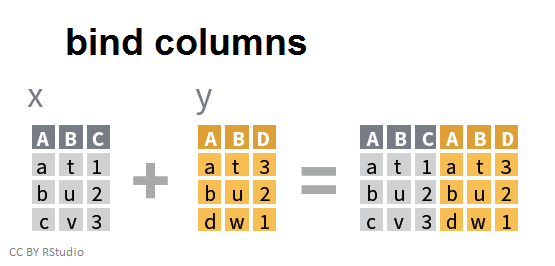
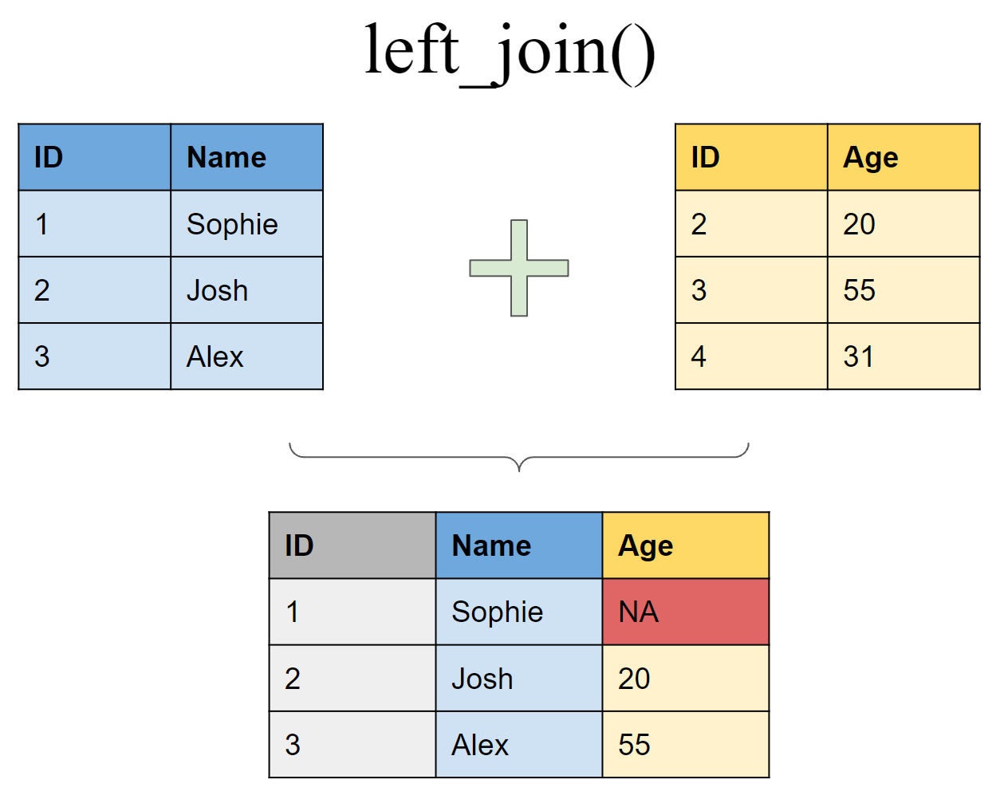

10 Binds and Joins
10.1 Introduction
Sometimes your data analysis project requires more than one data set that need to be combined in order to perform your analysis. This chapter covers two common methods of combining more than one data set in R - binds and joins. We’ll start this lesson covering the differences between these two methods including the situations to best use them in, and then move into the powerful R functions from the dplyr package that help with combining data frames.
10.2 Load Packages
We’ll start with loading packages
10.3 Differences between Binds and Joins
Binding either rows or columns from multiple data frames involves a simple combination of data frames. For example binding two data frames by row, makes a single data frame with more rows:

Notice that in this graphic, R recognizes that the two data frames share the same columns and simply appends the rows from Z to X with the proper column assignments.
In contrast, binding two data frames by columns performs the perpendicular operation resulting in a single data frame with more columns:

Binding data frames by columns combines the data in the order in which they appear, which can create unintended results without you realizing it. It is much safer to use a join when you want to add columns from one data frame to another. For example, here is a simple graphic demonstrating a left join to join two data frames together:

Joins are a safer method of combining data frame columns because they rely on keys, which are variables used to make the connection between two data frames. In the simple example above, the ID column is the key with which the tables are joined. If this was performed by simply combining columns, you would get a much different and erroneous result. There is a lot more to cover with the concept of keys, but the most important thing to remember is that they are unique for each observation or row in a data set.
After all this information, you may be wondering when is it best to use bind vs. join when combining data frames. Here are some simple guidelines:
When you want to add new rows from one data frame to another use bind rows. The columns should (mostly) be the same in the two data sets for this to be effective.
When you want to add new columns from one data frame to another, preferably use a join if they share a common key. Only use bind columns when you have no other option and pay close attention to the order in which the rows appear in the two data sets.
10.4 Bind rows
Now that we have a better understanding of what it means to bind the rows of multiple data frames, let’s learn about how to actually perform this operation. The bind_rows function within the dplyr package is the easiest way I’ve found to accomplish this. Let’s use the EMP water quality data set we’ve been working with to demonstrate how to bind rows. To start, we need a second data frame to bind to it. We’ll import both the 2020-2022 EMP data we’ve been working with and some additional EMP water quality data collected in 2019 at the same two stations - P8 and D7 - to be combined to the 2020-2022 data.
Let’s take a look at the structure and columns of the two data frames before binding them.
# 2020-2022 data:
glimpse(df_wq)Rows: 62
Columns: 20
$ Station <chr> "P8", "D7", "P8", "D7", "P8", "D7", "P8", "D7", "P8…
$ Date <date> 2020-01-16, 2020-01-22, 2020-02-14, 2020-02-20, 20…
$ Chla <dbl> 0.64, 0.67, 1.46, 2.15, 1.40, 1.89, 4.73, 1.74, 6.4…
$ Pheophytin <dbl> 0.50, 0.87, 0.69, 0.50, 0.56, 1.13, 1.25, 0.89, 0.8…
$ TotAlkalinity <dbl> 98.0, 82.0, 81.0, 86.0, 80.0, 93.0, 59.0, 78.0, 63.…
$ DissAmmonia <dbl> 0.150, 0.210, 0.250, 0.140, 0.110, 0.220, 0.050, 0.…
$ DissNitrateNitrite <dbl> 2.800, 0.490, 1.700, 0.480, 1.600, 0.380, 1.070, 0.…
$ DOC <dbl> 3.90, 0.27, 2.80, 0.39, 2.00, 0.19, 2.80, 1.20, 3.1…
$ TOC <dbl> 4.10, 0.32, 2.50, 0.41, 2.10, 0.20, 2.80, 1.20, 3.1…
$ DON <dbl> NA, NA, NA, NA, NA, NA, 0.30, 0.20, 0.30, 0.10, 0.5…
$ TotPhos <dbl> 0.310, 0.082, 0.130, 0.130, 0.190, 0.100, 0.188, 0.…
$ DissOrthophos <dbl> 0.200, 0.071, 0.130, 0.065, 0.140, 0.082, 0.177, 0.…
$ TDS <dbl> 380, 9500, 340, 5800, 290, 8700, 280, 7760, 227, 11…
$ TSS <dbl> 8.9, 38.0, 2.2, 18.0, 1.4, 28.0, 6.6, 35.6, 5.3, 23…
$ TKN <dbl> 0.520, 0.480, 0.430, 0.250, 0.400, 0.200, 0.400, 0.…
$ Depth <dbl> 28.9, 18.8, 39.0, 7.1, 39.0, 7.2, 37.1, 5.2, 36.7, …
$ Secchi <dbl> 116, 30, 212, 52, 340, 48, 100, 40, 160, 44, 120, 6…
$ Microcystis <dbl> 1, 1, 1, 1, 1, 1, 3, 2, 3, 2, 4, 2, 3, 2, 2, 1, 1, …
$ SpCndSurface <dbl> 667, 15532, 647, 11369, 530, 16257, 503, 12946, 404…
$ WTSurface <dbl> 9.67, 9.97, 11.09, 12.51, 13.97, 13.81, 23.46, 21.1…names(df_wq) [1] "Station" "Date" "Chla"
[4] "Pheophytin" "TotAlkalinity" "DissAmmonia"
[7] "DissNitrateNitrite" "DOC" "TOC"
[10] "DON" "TotPhos" "DissOrthophos"
[13] "TDS" "TSS" "TKN"
[16] "Depth" "Secchi" "Microcystis"
[19] "SpCndSurface" "WTSurface" # 2019 data:
glimpse(df_wq_2019)Rows: 24
Columns: 20
$ Station <chr> "P8", "D7", "P8", "D7", "P8", "D7", "P8", "D7", "P8…
$ Date <date> 2019-01-15, 2019-01-17, 2019-02-15, 2019-02-20, 20…
$ Chla <dbl> 0.84, 0.88, 2.29, 1.92, 2.60, 2.53, 1.59, 2.81, 1.0…
$ Pheophytin <dbl> 1.21, 0.64, 1.03, 2.32, 1.42, 1.35, 1.25, 1.19, 0.5…
$ TotAlkalinity <dbl> NA, NA, NA, NA, NA, NA, NA, NA, NA, NA, NA, NA, NA,…
$ DissAmmonia <dbl> 0.200, 0.214, 0.090, 0.070, 0.050, 0.050, 0.050, 0.…
$ DissNitrateNitrite <dbl> 3.600, 0.570, 1.030, 0.370, 0.540, 0.300, 0.420, 0.…
$ DOC <dbl> 6.00, 1.70, 6.10, 4.20, 3.60, 2.50, 2.60, 2.30, 2.2…
$ TOC <dbl> 6.00, 1.70, 5.60, 4.20, 3.60, 2.50, 2.60, 2.10, 2.2…
$ DON <dbl> 0.50, 0.10, 0.50, 0.30, 0.38, 0.20, 0.20, 0.16, 0.2…
$ TotPhos <dbl> 0.370, 0.094, 0.153, 0.180, 0.070, 0.080, 0.100, 0.…
$ DissOrthophos <dbl> 0.329, 0.092, 0.120, 0.071, 0.075, 0.065, 0.072, 0.…
$ TDS <dbl> 491, 8530, 160, 133, 112, 108, 109, 94, 118, 150, 5…
$ TSS <dbl> 12.0, 24.0, 17.0, 108.0, 6.0, 36.0, 27.0, 22.0, 4.0…
$ TKN <dbl> 0.800, 0.380, 0.700, 0.600, 0.400, 0.400, 0.300, 0.…
$ Depth <dbl> 38.7, 8.2, 17.0, 8.0, 36.7, 8.2, 39.0, 7.0, 37.8, 6…
$ Secchi <dbl> 100, 52, 44, 16, 76, 28, 92, 28, 100, 40, 80, 44, 1…
$ Microcystis <dbl> 1, 1, 1, 1, 1, 1, 1, 1, 1, 1, 1, 1, 1, 1, 2, 1, 4, …
$ SpCndSurface <dbl> 878, 14498, 276, 228, 194, 189, 195, 168, 214, 276,…
$ WTSurface <dbl> 10.03, 10.37, 10.87, 9.19, 12.12, 12.70, 14.26, 14.…names(df_wq_2019) [1] "Station" "Date" "Chla"
[4] "Pheophytin" "TotAlkalinity" "DissAmmonia"
[7] "DissNitrateNitrite" "DOC" "TOC"
[10] "DON" "TotPhos" "DissOrthophos"
[13] "TDS" "TSS" "TKN"
[16] "Depth" "Secchi" "Microcystis"
[19] "SpCndSurface" "WTSurface" You can see that all the column names and their types (classes) are the same which makes combining them by row a simple operation. We’ll use the bind_rows function to add the 2019 data to the 2020-2022 data and assign it to a new data frame object.
df_wq_2019_2022 <- bind_rows(df_wq_2019, df_wq)
df_wq_2019_2022# A tibble: 86 × 20
Station Date Chla Pheophytin TotAlkalinity DissAmmonia
<chr> <date> <dbl> <dbl> <dbl> <dbl>
1 P8 2019-01-15 0.84 1.21 NA 0.2
2 D7 2019-01-17 0.88 0.64 NA 0.214
3 P8 2019-02-15 2.29 1.03 NA 0.09
4 D7 2019-02-20 1.92 2.32 NA 0.07
5 P8 2019-03-14 2.6 1.42 NA 0.05
6 D7 2019-03-18 2.53 1.35 NA 0.05
7 P8 2019-04-12 1.59 1.25 NA 0.05
8 D7 2019-04-16 2.81 1.19 NA 0.05
9 P8 2019-05-13 1.03 0.5 NA 0.05
10 D7 2019-05-15 2.1 0.69 NA 0.05
# ℹ 76 more rows
# ℹ 14 more variables: DissNitrateNitrite <dbl>, DOC <dbl>, TOC <dbl>,
# DON <dbl>, TotPhos <dbl>, DissOrthophos <dbl>, TDS <dbl>, TSS <dbl>,
# TKN <dbl>, Depth <dbl>, Secchi <dbl>, Microcystis <dbl>,
# SpCndSurface <dbl>, WTSurface <dbl>range(df_wq_2019_2022$Date)[1] "2019-01-15" "2022-12-19"The new data frame now has EMP water quality data from 2019-2022.
You may be wondering what would happen if the two data frames had a few columns with different names. bind_rows would still combine the two data frames but it would preserve separate columns for the ones with different names.
However, if the two data frames had columns with the same name but with different types (classes - numeric, character, etc.), bind_rows will not work and give you an error. It is always best practice to check this by using glimpse or str on the two data frames before proceeding with binding their rows.
10.4.1 Exercise
Now its your turn to try out combining two data sets by binding rows.
Add water quality data collected from 2020-2022 at C3A to the original data frame (df_wq) with data from P8 and D7. Assign this data frame to a new object to be used later. The C3A data is in the “WQ_C3A_2020_2022.csv” file.
Click below for the answer when you are done!
Code
# Import EMP water quality data for C3A
df_wq_c3a <- read_csv(here("data/WQ_C3A_2020_2022.csv"))
# Check the structure and column names of the two data frames
glimpse(df_wq_c3a)
names(df_wq_c3a)
glimpse(df_wq)
names(df_wq)
# Add C3A to original data frame with P8 and D7
df_wq_p8_d7_c3a <- bind_rows(df_wq, df_wq_c3a)
# Take a look at the combined data set
df_wq_p8_d7_c3a %>% arrange(Date, Station)10.5 Join basics
The dplyr package provides various methods to join data frames together:

In the section above, we touched on the concept of keys and their importance with joins. Here is an illustration that helps explain keys further and how they assist with various types of joins:

In this figure the join keys are color-coded and the matching pairs share the same color. Keys 1 and 2 match between the two data frames and are joined together in the resulting data frame. The differences between the join types lie in how they handle keys that don’t have a match. In short, a left_join keeps all rows in the first data frame, a right_join keeps all observations in the second data frame, and a full_join keeps all rows from both data frames.
10.6 Left join
While all these joining methods can be useful, we’ll focus on the most commonly-used joining method - left_join. We’ll use a left_join to add Delta inflow and outflow data from DayFlow to the 2019-2022 EMP water quality data. First, we’ll need to import the DayFlow data:
Let’s take a look at the structure of the two data frames before joining them.
# 2019-2022 EMP water quality data:
glimpse(df_wq_2019_2022)Rows: 86
Columns: 20
$ Station <chr> "P8", "D7", "P8", "D7", "P8", "D7", "P8", "D7", "P8…
$ Date <date> 2019-01-15, 2019-01-17, 2019-02-15, 2019-02-20, 20…
$ Chla <dbl> 0.84, 0.88, 2.29, 1.92, 2.60, 2.53, 1.59, 2.81, 1.0…
$ Pheophytin <dbl> 1.21, 0.64, 1.03, 2.32, 1.42, 1.35, 1.25, 1.19, 0.5…
$ TotAlkalinity <dbl> NA, NA, NA, NA, NA, NA, NA, NA, NA, NA, NA, NA, NA,…
$ DissAmmonia <dbl> 0.200, 0.214, 0.090, 0.070, 0.050, 0.050, 0.050, 0.…
$ DissNitrateNitrite <dbl> 3.600, 0.570, 1.030, 0.370, 0.540, 0.300, 0.420, 0.…
$ DOC <dbl> 6.00, 1.70, 6.10, 4.20, 3.60, 2.50, 2.60, 2.30, 2.2…
$ TOC <dbl> 6.00, 1.70, 5.60, 4.20, 3.60, 2.50, 2.60, 2.10, 2.2…
$ DON <dbl> 0.50, 0.10, 0.50, 0.30, 0.38, 0.20, 0.20, 0.16, 0.2…
$ TotPhos <dbl> 0.370, 0.094, 0.153, 0.180, 0.070, 0.080, 0.100, 0.…
$ DissOrthophos <dbl> 0.329, 0.092, 0.120, 0.071, 0.075, 0.065, 0.072, 0.…
$ TDS <dbl> 491, 8530, 160, 133, 112, 108, 109, 94, 118, 150, 5…
$ TSS <dbl> 12.0, 24.0, 17.0, 108.0, 6.0, 36.0, 27.0, 22.0, 4.0…
$ TKN <dbl> 0.800, 0.380, 0.700, 0.600, 0.400, 0.400, 0.300, 0.…
$ Depth <dbl> 38.7, 8.2, 17.0, 8.0, 36.7, 8.2, 39.0, 7.0, 37.8, 6…
$ Secchi <dbl> 100, 52, 44, 16, 76, 28, 92, 28, 100, 40, 80, 44, 1…
$ Microcystis <dbl> 1, 1, 1, 1, 1, 1, 1, 1, 1, 1, 1, 1, 1, 1, 2, 1, 4, …
$ SpCndSurface <dbl> 878, 14498, 276, 228, 194, 189, 195, 168, 214, 276,…
$ WTSurface <dbl> 10.03, 10.37, 10.87, 9.19, 12.12, 12.70, 14.26, 14.…# DayFlow data:
glimpse(df_dayflow)Rows: 1,734
Columns: 3
$ Date <date> 2019-01-01, 2019-01-02, 2019-01-03, 2019-01-04, 2019-01-05, 2…
$ Inflow <dbl> 14763, 14049, 13830, 13435, 13354, 15286, 19296, 25543, 30357,…
$ Outflow <dbl> 7335, 6445, 6425, 6273, 7534, 17086, 21143, 27350, 33043, 3447…Both data frames share the Date column which will be our join key. Note that the Date columns are “date” class in both data sets. This is important - if they were different data classes, R wouldn’t know how to match them together. Also note that the DayFlow data set has observations for every day between 1/1/2019 to 9/30/2023, while the EMP water quality data frame only has a few observations per month. Because we are interested in adding the DayFlow values to the water quality data set, we’ll join them together with a left_join with the water quality data frame as the first data frame. This will only keep the rows within the water quality data set and drop the unmatching rows from the DayFlow data set.
# Join Delta flow data to 2019-2022 WQ data
df_wq_flow <- left_join(df_wq_2019_2022, df_dayflow)Joining with `by = join_by(Date)`glimpse(df_wq_flow)Rows: 86
Columns: 22
$ Station <chr> "P8", "D7", "P8", "D7", "P8", "D7", "P8", "D7", "P8…
$ Date <date> 2019-01-15, 2019-01-17, 2019-02-15, 2019-02-20, 20…
$ Chla <dbl> 0.84, 0.88, 2.29, 1.92, 2.60, 2.53, 1.59, 2.81, 1.0…
$ Pheophytin <dbl> 1.21, 0.64, 1.03, 2.32, 1.42, 1.35, 1.25, 1.19, 0.5…
$ TotAlkalinity <dbl> NA, NA, NA, NA, NA, NA, NA, NA, NA, NA, NA, NA, NA,…
$ DissAmmonia <dbl> 0.200, 0.214, 0.090, 0.070, 0.050, 0.050, 0.050, 0.…
$ DissNitrateNitrite <dbl> 3.600, 0.570, 1.030, 0.370, 0.540, 0.300, 0.420, 0.…
$ DOC <dbl> 6.00, 1.70, 6.10, 4.20, 3.60, 2.50, 2.60, 2.30, 2.2…
$ TOC <dbl> 6.00, 1.70, 5.60, 4.20, 3.60, 2.50, 2.60, 2.10, 2.2…
$ DON <dbl> 0.50, 0.10, 0.50, 0.30, 0.38, 0.20, 0.20, 0.16, 0.2…
$ TotPhos <dbl> 0.370, 0.094, 0.153, 0.180, 0.070, 0.080, 0.100, 0.…
$ DissOrthophos <dbl> 0.329, 0.092, 0.120, 0.071, 0.075, 0.065, 0.072, 0.…
$ TDS <dbl> 491, 8530, 160, 133, 112, 108, 109, 94, 118, 150, 5…
$ TSS <dbl> 12.0, 24.0, 17.0, 108.0, 6.0, 36.0, 27.0, 22.0, 4.0…
$ TKN <dbl> 0.800, 0.380, 0.700, 0.600, 0.400, 0.400, 0.300, 0.…
$ Depth <dbl> 38.7, 8.2, 17.0, 8.0, 36.7, 8.2, 39.0, 7.0, 37.8, 6…
$ Secchi <dbl> 100, 52, 44, 16, 76, 28, 92, 28, 100, 40, 80, 44, 1…
$ Microcystis <dbl> 1, 1, 1, 1, 1, 1, 1, 1, 1, 1, 1, 1, 1, 1, 2, 1, 4, …
$ SpCndSurface <dbl> 878, 14498, 276, 228, 194, 189, 195, 168, 214, 276,…
$ WTSurface <dbl> 10.03, 10.37, 10.87, 9.19, 12.12, 12.70, 14.26, 14.…
$ Inflow <dbl> 27349, 42029, 129533, 107109, 129444, 105932, 10488…
$ Outflow <dbl> 21963, 42727, 130451, 95024, 121805, 97089, 100003,…The resulting data frame has the same number of rows as the df_wq_2019_2022 water quality data set with the addition of two columns - Inflow and Outflow - which are the joined values from the DayFlow data set. Note that R gave an informative message regarding which columns it performed the join by, which in this case is the Date column.
10.6.1 Exercise
Now its your turn to try out joining two data sets.
Use a left_join to add weather observation data to the 2020-2022 water quality data collected at P8, D7, and C3A (the data frame you created in the bind rows exercise above). The weather observation data is in the “Weather_Obs_P8_D7_C3A_2020_2022.csv” file.
Click below for the answer when you are done!
Code
# Import the weather observation data
df_weather <- read_csv(here("data/Weather_Obs_P8_D7_C3A_2020_2022.csv"))
# Check the structure of the two data frames to be joined
glimpse(df_wq_p8_d7_c3a)
glimpse(df_weather)
# Note that the two data frames share the "Station" and "Date" columns.
# These will be the two columns that the data frames will be joined by.
# In combination they form a unique combination, which is known as a
# compound key.
# Join the weather data to the water quality data
df_wq_weather <- left_join(df_wq_p8_d7_c3a, df_weather)
# Take a look at the joined data set
glimpse(df_wq_weather)